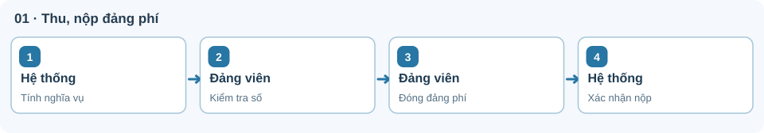
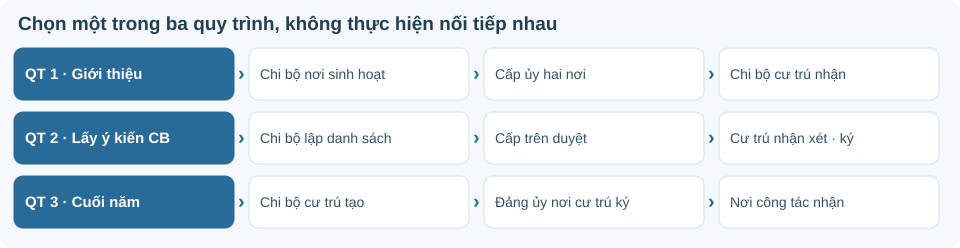
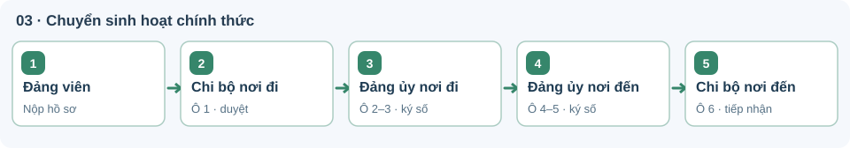
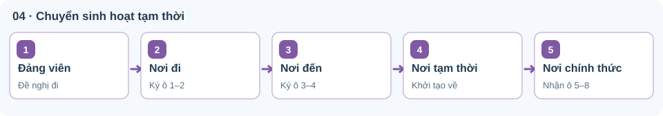

Hướng dẫn 04 thủ tục TTHC
Đúng người thực hiện · Đúng menu thao tác · Đúng trình tự xử lý
Xem hướng dẫn ↓ TẢI PDF TOÀN BỘ 04 THỦ TỤCThu, nộp đảng phí
Đảng viên kiểm tra nghĩa vụ do hệ thống tính; số đúng thì nộp ngay, chỉ số sai mới gửi yêu cầu điều chỉnh.
Sơ đồ quy trình
☷ Các bước chính
- Chọn kỳ và đối chiếu số tiền.
- Nếu đúng, đóng đảng phí trực tiếp.
- Kiểm tra trạng thái và biên lai.
⚑ Kết quả
Đã nộp / Có biên lai điện tử.
Hướng dẫn chi tiết: nộp, điều chỉnh và phân bổ

01.1 · Luồng nộp bình thường
- Mở nghĩa vụ đảng phíHệ thống + đảng viên
Đăng nhập → Thu, nộp Đảng phí → Xem chi tiết nghĩa vụ. Hệ thống tự tính số phải nộp theo kỳ, không cần đảng viên lập tờ khai tháng.
- Chọn kỳ và kiểm tra số tiềnĐảng viên
Xem kỳ nộp, đối tượng, căn cứ BHXH, truy thu, giảm trừ, miễn/giảm và tổng số phải nộp. Nếu số đúng, chuyển sang bước 3; nếu chưa đúng, xem nhánh điều chỉnh bên dưới.
- Số đúng → thanh toán trực tiếpĐảng viên
Bấm Đóng đảng phí → kiểm tra khoản nộp → chọn phương thức (QR/ngân hàng theo màn hình) → hoàn tất. Không có bước Bí thư phê duyệt đối với khoản tính đúng.
- Nhận trạng thái hoàn thànhHệ thống
Khi thanh toán được xác nhận, kỳ nộp hiển thị Đã hoàn thành; kiểm tra biên lai/giao dịch. Nếu ngân hàng đã trừ tiền nhưng chưa cập nhật, không nộp lần hai; gửi tra soát.
01.2 · Điều chỉnh khi số tiền chưa đúng hoặc thiếu BHXH
- Gửi yêu cầu điều chỉnhĐảng viên
Tại chi tiết nghĩa vụ bấm Yêu cầu điều chỉnh hoặc Gửi thông tin mức đảng phí → chọn loại điều chỉnh, nhập mức đề nghị và lý do → đính kèm ít nhất 1 tệp → Gửi yêu cầu.
- Xem xét và xử lýBí thư/cán bộ tài chính chi bộ có quyền
Vào chức năng Hồ sơ cần điều chỉnh trong quản lý đảng phí → đối chiếu chứng từ, phê duyệt hoặc từ chối, ghi rõ lý do. Đây là yêu cầu điều chỉnh, không phải bước duyệt mọi kỳ thu.
- Nộp theo mức đã xử lýĐảng viên
Sau khi yêu cầu được xử lý, hồ sơ trở về trạng thái chờ nộp; nếu được duyệt thì áp dụng mức mới, nếu bị từ chối thì giữ mức cũ. Kiểm tra lại rồi thanh toán.
01.3 · Nộp hộ, miễn 100%, nộp thiếu và nộp thừa
Nộp hộ: Vào chức năng nộp hộ → tìm đúng người theo các trường định danh → kiểm tra kỳ, số tiền → thanh toán.
Miễn 100%: Nếu cấu hình miễn đúng, hồ sơ có thể hoàn tất khoản 0 đồng, không phải thanh toán.
Nộp thiếu kỳ trước: Hệ thống tính truy thu hoặc người dùng gửi điều chỉnh nếu thiếu căn cứ; thực hiện nộp bù theo kỳ hiện hành.
Nộp thừa: Gửi yêu cầu hoàn tiền kèm mã giao dịch, lý do, số tiền; bộ phận được phân quyền đối soát trước khi hoàn phần được phép.
★ PHÂN BỔ ĐẢNG PHÍ — Công văn 6163-CV/VPTW ngày 01/11/2026
Tiếp tục tỷ lệ tại Điều 6 Quy định 01-QĐ/TW.
Giữ nguyên khoản đã phân bổ các kỳ trước. Chỉ khoản CHƯA PHÂN BỔ áp dụng mức trong bảng dưới.
Tổ chức đảng trong nước và tổ chức ngoài nước không thuộc Đảng bộ Bộ Ngoại giao:
| Tỷ lệ giữ lại | Loại tổ chức đảng | Cơ sở tính |
|---|---|---|
| 70% | Chi bộ thôn, tổ dân phố, sinh viên; các chi bộ lực lượng vũ trang/địa bàn đặc thù được liệt kê tại mục 2.2.1 | Trên số đảng phí thu của đảng viên tại chi bộ |
| 50% | Các chi bộ còn lại | Trên số thu của đảng viên tại chi bộ |
| 30% | Đảng ủy bộ phận | Trên phần còn lại sau khi trừ tiền để lại cho chi bộ |
| 70% | Đảng ủy trực thuộc cơ sở | Trên phần còn lại sau khi trừ tiền để lại cho các tổ chức cấp dưới |
| 70% | Đảng ủy cơ sở xã, phường, đặc khu | Trên phần còn lại sau khi trừ tiền để lại cho các tổ chức cấp dưới |
| 50% | Các đảng ủy cơ sở còn lại | Trên phần còn lại sau khi trừ tiền để lại cho các tổ chức cấp dưới |
Cách tính qua các cấp: Chi bộ giữ phần được phép → phần còn lại chuyển lên cấp có trong tuyến thực tế → cấp đó giữ tỷ lệ trên PHẦN CÒN LẠI. Không lấy toàn bộ số thu ban đầu nhân với tỷ lệ của mọi cấp.
Ví dụ: Chi bộ thôn thu 100.000 đồng, giữ 70.000 đồng, chuyển 30.000 đồng. Nếu tuyến có đảng ủy bộ phận, cấp này giữ 30% × 30.000 = 9.000 đồng, chuyển 21.000 đồng. Nếu tuyến tiếp có đảng ủy trực thuộc cơ sở, cấp đó giữ 70% × 21.000 = 14.700 đồng. Ví dụ chỉ dùng cho tuyến có đầy đủ các cấp nêu trên.
Nước ngoài thuộc Đảng bộ Bộ Ngoại giao: Chi bộ/đảng ủy bộ phận trực thuộc đảng ủy nước sở tại giữ 50%, nộp 50%; đảng ủy nước sở tại giữ 70%, nộp 30% về Đảng ủy Bộ Ngoại giao; Đảng ủy Bộ Ngoại giao nộp 100% phần đảng phí thu được của các tổ chức ở nước ngoài về Văn phòng Trung ương Đảng.
Đính chính ảnh minh họa: Dòng “Đảng ủy trực thuộc cơ sở nộp 70%, giữ 30%” trong một hình bạn gửi là ngược văn bản gốc. Công văn 6163 quy định giữ 70% phần còn lại.
Nguồn: Công văn 6163-CV/VPTW ngày 01/11/2026, mục 1, 2.1, 2.2.1 và 2.2.2. Đọc nội dung công văn. Công văn này không thay đổi mức đóng cá nhân theo tháng.
Nguồn: Tập huấn Thu, nộp đảng phí 05/11/2026; bổ sung phân bổ theo Công văn 6163-CV/VPTW ngày 01/11/2026.
Lấy ý kiến nhận xét nơi cư trú
Ba quy trình thành phần độc lập: chọn đúng tình huống. “Chi bộ nơi công tác lập danh sách” chỉ là bước đầu của Quy trình 2.
Sơ đồ quy trình
☷ Các bước chính
- QT1: Chi bộ nơi sinh hoạt khởi tạo.
- QT2: Nơi công tác lập danh sách trước.
- QT3: Nơi cư trú chủ động nhận xét.
⚑ Kết quả
Phiếu giới thiệu / Phiếu nhận xét được xác nhận.
Hướng dẫn chi tiết: 3 quy trình nơi cư trú

Điều kiện chung — cập nhật chi bộ nơi cư trú khi thiếu hoặc thay đổi
Đảng viên: Khi đăng nhập mà hệ thống yêu cầu cập nhật, chọn lần lượt đảng bộ cấp trên → đảng bộ cơ sở → đảng bộ trực thuộc (nếu có) → chi bộ nơi cư trú, rồi bấm Cập nhật.
Chi bộ nơi đang sinh hoạt: Tài khoản có quyền vào Quản lý Đảng viên → Quản lý Đảng viên → tìm người → cột Hành động → Cập nhật Chi bộ nơi cư trú → lưu.
Không kê khai lại mỗi năm nếu thông tin đã đúng và nơi cư trú không thay đổi. Đảng viên thuộc diện miễn sinh hoạt tại nơi cư trú chọn ô miễn theo hướng dẫn trên màn hình.
Chọn một quy trình thành phần
QUY TRÌNH 1 Giới thiệu đảng viên về sinh hoạt tại nơi cư trú Khi giới thiệu mới hoặc thay đổi nơi cư trú · Chi bộ nơi sinh hoạt khởi tạo
- Tạo hồ sơ giới thiệuChi bộ nơi đang sinh hoạt
Tài khoản chi bộ có quyền vào Quản lý hồ sơ TTHC khác → Chờ xử lý → Tạo mới hồ sơ; chọn đảng viên, nơi cư trú và hoàn tất hồ sơ giới thiệu. Trường hợp đối tượng được miễn giới thiệu thì không tạo hồ sơ.
- Duyệt và chuyển điCấp ủy nơi đang sinh hoạt
Kiểm tra đối tượng, căn cứ và hồ sơ; ký duyệt giấy giới thiệu theo thẩm quyền. Hệ thống chuyển đến cấp ủy nơi cư trú.
- Giới thiệu về chi bộ nơi cư trúCấp ủy nơi cư trú
Tiếp nhận, xác nhận và ký giấy giới thiệu, chuyển đến chi bộ thôn/tổ dân phố đúng địa bàn.
- Tiếp nhận đảng viênChi bộ nơi cư trú
Tiếp nhận vào danh sách giữ mối liên hệ, thông báo cho đảng viên; đảng viên theo dõi và nhận kết quả điện tử.
QUY TRÌNH 2 Lấy ý kiến phục vụ công tác cán bộ Quy hoạch, bổ nhiệm, khen thưởng, kỷ luật… · Chi bộ nơi công tác lập danh sách đầu tiên
- Mở danh sách đảng viênChi bộ nơi đang sinh hoạt
Đăng nhập bằng tài khoản chi bộ có quyền → Quản lý Đảng viên → Quản lý Đảng viên. Ở phần Kết quả tìm kiếm, bấm nút xanh Lập danh sách lấy ý kiến nơi cư trú.
- Chọn người và trình cấp trênChi bộ nơi đang sinh hoạt
Tích chọn đảng viên đủ điều kiện (đã có chi bộ cư trú và chưa có hồ sơ cùng thủ tục đang xử lý) → Lập danh sách (n) → kiểm tra/thêm/xóa → Lập danh sách và trình lên cấp trên.
- Phê duyệt danh sáchCấp ủy cấp trên nơi công tác
Vào Quản lý hồ sơ TTHC khác → Phê duyệt danh sách lấy ý kiến nơi cư trú → lọc Chờ phê duyệt → Phê duyệt hoặc Từ chối. Khi duyệt, hệ thống chuyển đến chi bộ nơi cư trú.
- Lập phiếu nhận xétChi bộ nơi cư trú
Vào Quản lý hồ sơ TTHC khác → Chờ xử lý → Xử lý hồ sơ → phần Tài liệu kết quả xử lý → Nhấn để tạo kết quả xử lý → nhập đánh giá và thông tin phê duyệt → Xem trước → Lưu → Phê duyệt hồ sơ.
- Ký và đóng dấuĐảng ủy nơi cư trú
Mở hồ sơ chờ xử lý, kiểm tra phiếu nhận xét → chọn đơn vị/người xử lý → Xem trước → Ký số → Lưu → Phê duyệt hồ sơ. Bước đóng dấu tiếp theo sử dụng chữ ký số tổ chức và nút Đóng dấu.
- Nhận và dùng kết quảChi bộ nơi công tác + đảng viên
Chi bộ nơi công tác nhận phiếu đã xác nhận để sử dụng đúng mục đích xin ý kiến; đảng viên theo dõi và nhận kết quả.
QUY TRÌNH 3 Nhận xét định kỳ cuối năm Chi bộ nơi cư trú chủ động khởi tạo · Chi bộ nơi công tác nhận kết quả
- Chủ động lập phiếu cuối nămChi bộ nơi cư trú
Không đợi chi bộ nơi công tác lập danh sách. Tài khoản chi bộ có quyền vào Quản lý Đảng viên → Quản lý đảng viên sinh hoạt nơi cư trú → chọn người → Nhận xét.
- Đánh giá và trình kýChi bộ nơi cư trú
Trên cơ sở trao đổi với Ban công tác Mặt trận, điền tiêu chí, nhận xét khác, ngày và người xử lý → Xem trước → Lưu phiếu → chuyển lên cấp ủy nơi cư trú.
- Xác nhận, ký số, đóng dấuĐảng ủy nơi cư trú
Mở hồ sơ ở Quản lý hồ sơ TTHC khác → Chờ xử lý; kiểm tra, ký số, đóng dấu bằng tài khoản được phân quyền và chuyển kết quả về nơi công tác.
- Nhận kết quả cuối nămChi bộ nơi công tác + đảng viên
Chi bộ nơi công tác tiếp nhận phiếu để phục vụ kiểm điểm, đánh giá, xếp loại; đảng viên nhận kết quả. Nơi công tác không khởi tạo danh sách cho quy trình 3.
Nguồn: Hướng dẫn nâng cấp Lấy ý kiến nhận xét nơi cư trú (PDF 23 trang người dùng cung cấp), tài liệu tập huấn 05/11/2026 và phụ lục Quy định 221.
Chuyển sinh hoạt đảng chính thức
Mẫu điện tử 06 ô thay mẫu 07/10 ô cũ; theo luồng của nơi chuyển đi → nơi chuyển đến.
Sơ đồ quy trình
☷ Các bước chính
- Kiểm tra hồ sơ, xác nhận ô 1.
- Cấp ủy ký số các ô liên quan.
- Chi bộ nơi đến tiếp nhận ô 6.
⚑ Kết quả
Giấy giới thiệu điện tử 6 ô hoàn thành.
Hướng dẫn chi tiết: chuyển sinh hoạt chính thức

- Khai và nộp hồ sơ chuyển chính thứcĐảng viên
Đăng nhập bằng định danh theo hệ thống, chọn Chuyển sinh hoạt đảng chính thức; khai nơi đến, căn cứ thay đổi, đính kèm quyết định/bản tự kiểm điểm và gửi hồ sơ.
- Kiểm tra, tạo giấy giới thiệuChi bộ nơi chuyển đi · ô 1
Vào Quản lý hồ sơ TTHC khác → Chờ xử lý → Xử lý hồ sơ → Nhấn để tạo kết quả xử lý. Kiểm tra người, Kính gửi, tháng đã đóng đảng phí, tài liệu kèm → Xem trước → Lưu → Phê duyệt hồ sơ. Ô 1 phê duyệt điện tử, không ký số.
- Kiểm tra và giới thiệu điĐảng ủy nơi chuyển đi · ô 2, 3
Tổ chức đảng có trách nhiệm xử lý ô 2 (nếu có cấp tương ứng), sau đó đảng ủy cơ sở ký số ô 3, chuyển hồ sơ đến nơi nhận. Không bắt mọi hồ sơ qua cấp không tồn tại.
- Tiếp nhận và chuyển cho chi bộĐảng ủy nơi chuyển đến · ô 4, 5
Đảng ủy cơ sở nơi đến tiếp nhận và ký số ô 4. Nếu có đảng ủy trực thuộc cơ sở tham gia luồng, xử lý ô 5; hệ thống chuyển đến chi bộ nhận.
- Tiếp nhận kết thúcChi bộ nơi chuyển đến · ô 6
Ghi ngày tiếp nhận và nội dung “đã nhận và báo cho đồng chí” → kiểm tra → Lưu → Phê duyệt hồ sơ ô 6 bằng điện tử. Không ký số ở ô 6; đảng viên nhận giấy giới thiệu điện tử hoàn tất.
Ô 2 và ô 5 có phải lúc nào cũng làm không?
Không. Cấp đảng ủy trực thuộc cơ sở chỉ tham gia khi cơ cấu và tuyến hồ sơ thực tế có cấp này. Đảng bộ bộ phận, đảng bộ trực thuộc Trung ương trong luồng nâng cấp này có thể chỉ nhận thông tin. Tài khoản nào xử lý ô nào phải theo phân quyền và sơ đồ luân chuyển của hồ sơ.
Nguồn: Hướng dẫn nâng cấp Chuyển sinh hoạt chính thức 15 trang và tài liệu tập huấn 05/11/2026.
Chuyển sinh hoạt đảng tạm thời
Giấy giới thiệu điện tử 08 ô chia hai chiều. Chiều đi do đảng viên đề nghị; chiều về do chi bộ nơi tạm thời chủ động.
Sơ đồ quy trình
☷ Các bước chính
- Đảng viên nộp đề nghị chiều đi.
- Chi bộ, cấp ủy nơi tạm thời tiếp nhận.
- Kết thúc và tiếp nhận lại nơi chính thức.
⚑ Kết quả
Hoàn thành giấy giới thiệu điện tử 8 ô.
Hướng dẫn chi tiết: chiều đi và chiều về

04.1 · Chiều đi · ô 1–4
- Nộp đề nghị chuyển tạm thờiĐảng viên
Đăng nhập VNeID mức 2 → chọn Chuyển sinh hoạt đảng tạm thời → nhập nơi đến, thời gian, lý do → đính kèm căn cứ/quyết định và bản tự kiểm điểm → gửi hồ sơ, nhận mã.
- Kiểm tra, ký số giới thiệuChi bộ sinh hoạt chính thức · ô 1
Chi ủy/Bí thư có thẩm quyền kiểm tra hồ sơ, lập giấy giới thiệu tạm thời và ký số ô 1.
- Giới thiệu đến cấp ủy nơi nhậnĐảng ủy nơi đi · ô 2
Cấp ủy trực thuộc cơ sở hoặc cơ sở theo tuyến ký số ô 2 và chuyển hồ sơ.
- Giới thiệu về chi bộ nơi tạm thờiĐảng ủy nơi đến · ô 3
Kiểm tra, tiếp nhận, ký số ô 3, chuyển đến chi bộ sinh hoạt tạm thời.
- Tiếp nhận tạm thờiChi bộ nơi tạm thời · ô 4
Chi ủy/Bí thư ký số ô 4, tiếp nhận đảng viên; hệ thống cập nhật trạng thái sinh hoạt tạm thời. Đảng viên nhận kết quả chiều đi.
04.2 · Chiều về · ô 5–8
- Chủ động khởi tạo chiều vềChi bộ nơi tạm thời · ô 5
Khi hết thời gian sinh hoạt tạm thời, chi bộ nơi tạm thời tìm hồ sơ đang hiệu lực, nhận xét bản tự kiểm điểm và ký số ô 5. Đảng viên theo dõi tiến trình.
- Giới thiệu trở vềĐảng ủy nơi tạm thời · ô 6
Kiểm tra hồ sơ, ký số ô 6, chuyển đến cấp ủy nơi sinh hoạt chính thức.
- Tiếp nhận và chuyển cho chi bộĐảng ủy nơi chính thức · ô 7
Kiểm tra, ký số ô 7; bổ sung nhận xét vào hồ sơ đảng viên điện tử.
- Tiếp nhận trở lạiChi bộ nơi chính thức · ô 8
Chi ủy/Bí thư ký số ô 8; hệ thống kết thúc trạng thái tạm thời, chuyển quản lý đảng phí về chi bộ chính thức. Đảng viên nhận giấy đủ 8 ô.
Nguồn: Phụ lục Quy trình điện tử Chuyển sinh hoạt đảng tạm thời trong bộ tập huấn 04 TTHC.